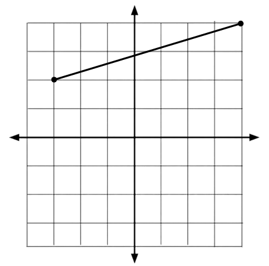
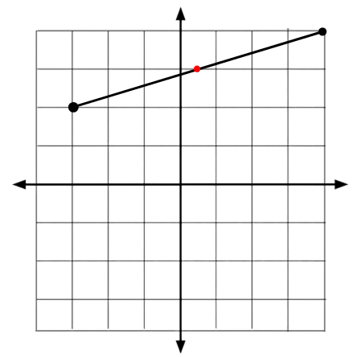

Midpoints
Introduction
A midpoint in a line segment is the halfway point in it…
The formula for finding midpoints is…
An example of finding a midpoint would be two points on a coordinate graph...

So in this example, the midpoint is at, (0.5, 3)...

If the math problem is giving you the coordinates for the two points of the line segment like these ones…
What’s the midpoint of (2, 4) and (8, 2)?
What’s the midpoint of (7, 6) and (-8, -4)?
What’s the midpoint of (-2, -4) and (-8, 6)?
First we add up the two point’s x values…
What’s the midpoint of (2, 4) and (8, 2)?
What’s the midpoint of (7, 6) and (-8, -4)
What’s the midpoint of (-2, -4) and (-8, 6)
Then we add up the two point’s y values…
What’s the midpoint of (2, 4) and (8, 2)
What’s the midpoint of (7, 6) and (-8, -4)
What’s the midpoint of (-2, -4) and (-8, 6)
The answers to the first problem is, (5, 3), the second problem is (-0.5, 1), the third and final problem is, (-5, 1).
Done? Here are other Links
Back to Main Page
Back to Informational
If you are seeing this, your clock is missing a ding-dong
If you are seeing this, your calender needs a pin or two.